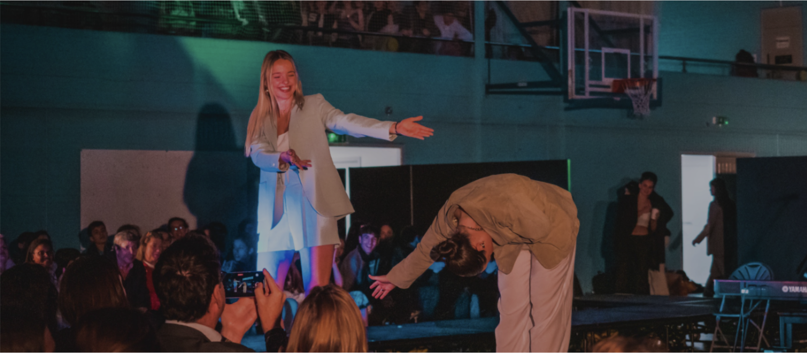
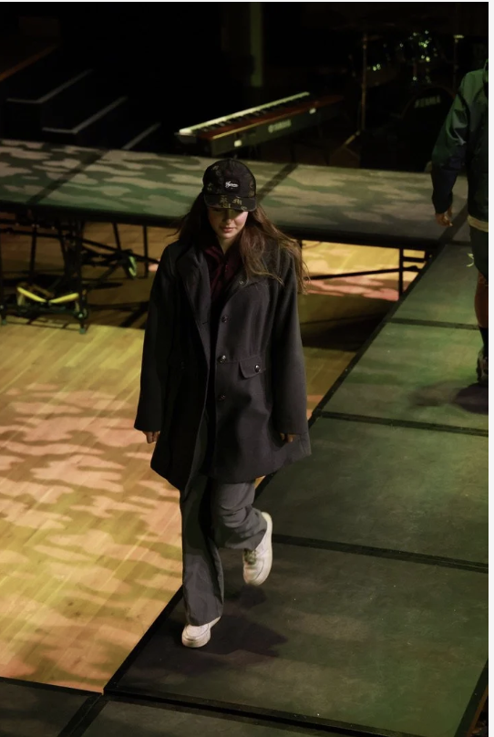
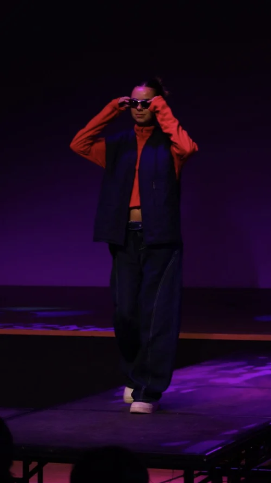
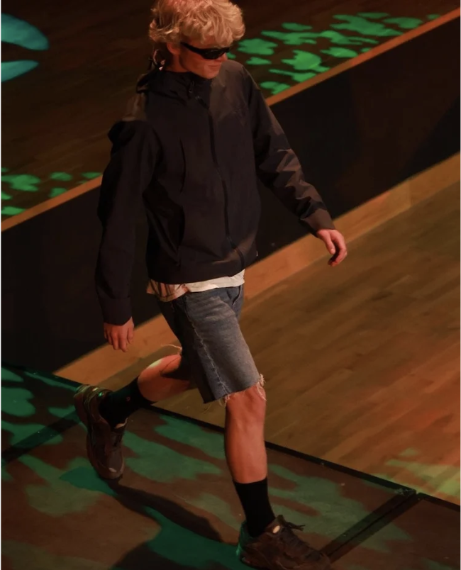
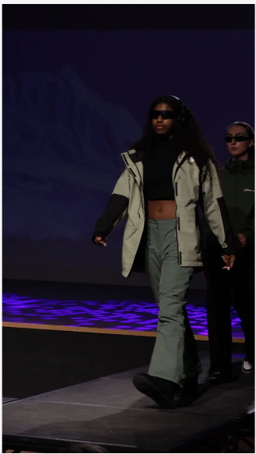
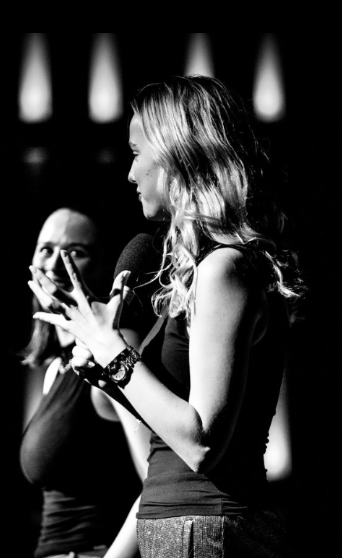

ACS Fashion Show
Fashion Show Manager & Stylist2021 – 2023

Directed and produced a diverse collaborative team of 200+ students across various year groups to successfully organise the yearly fashion show.
- 200+Students
- 6Performance groups
- 5Fashion lines
- 10Stylists
- 20Models per line
- 15Tech crew





My Role
As Fashion Show Manager, I oversaw production, model coordination, and creative direction, ensuring a cohesive show from concept to runway. I curated looks, managed fittings, and led a team of stylists to bring each fashion line to life. I also styled my own line alongside dancing in the show.
The Show
A three hour long production featuring 6 performance groups and 5 fashion lines.